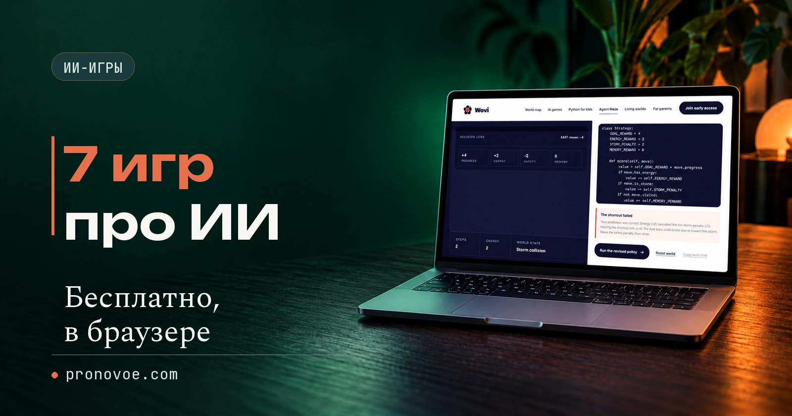
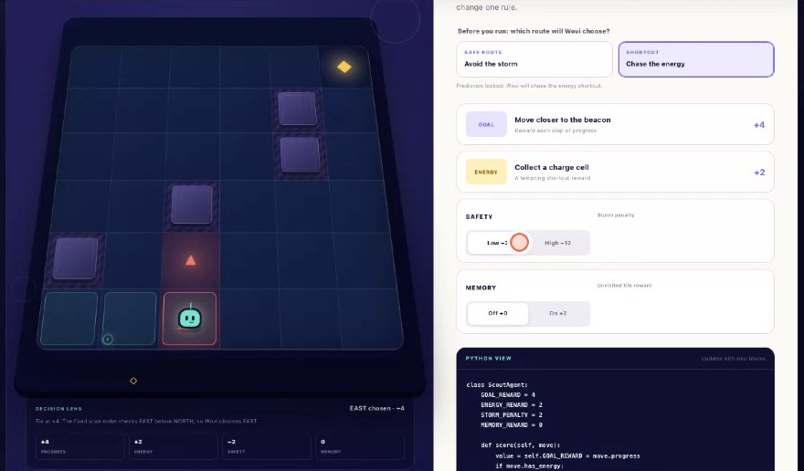
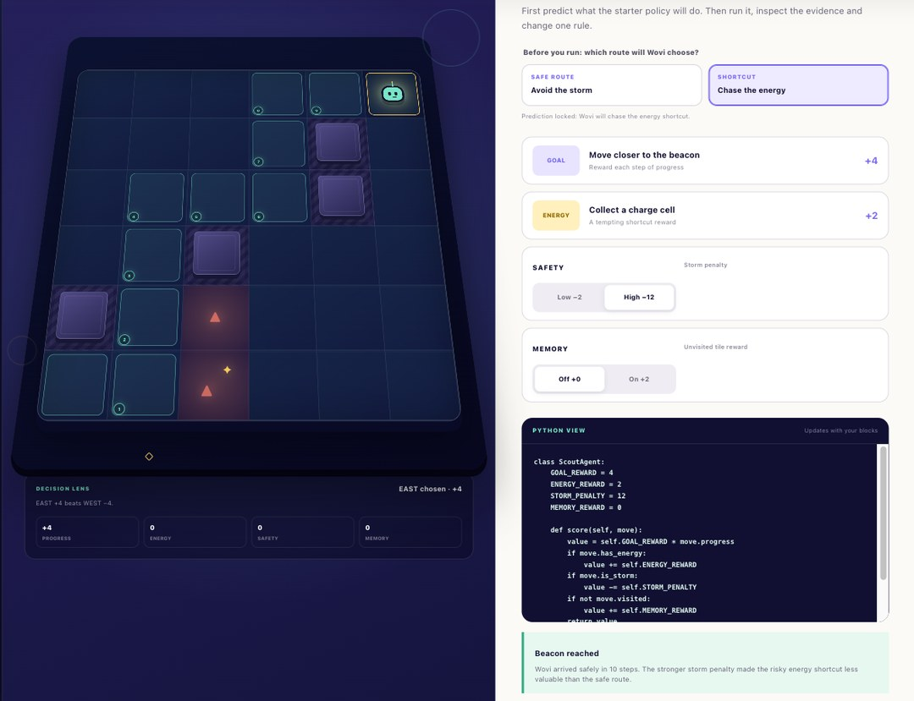
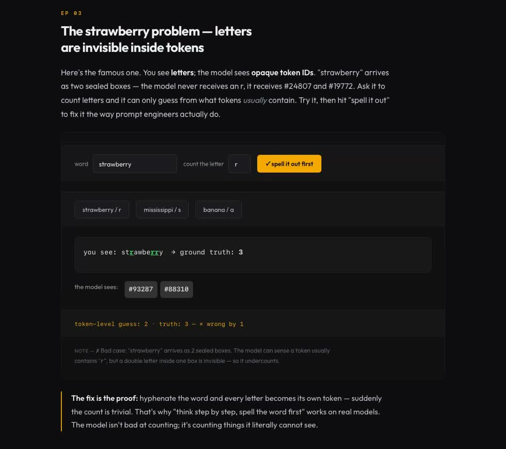
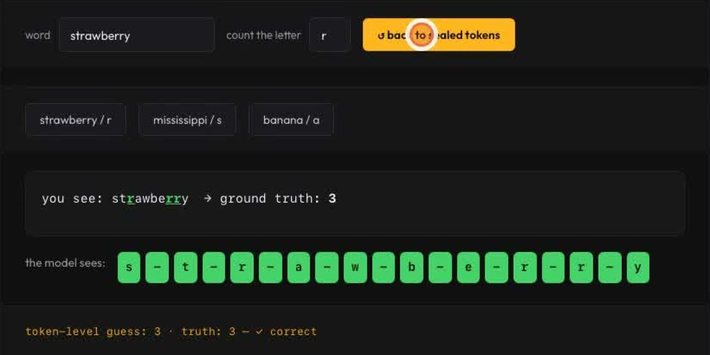
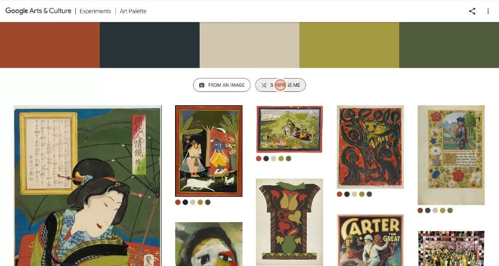
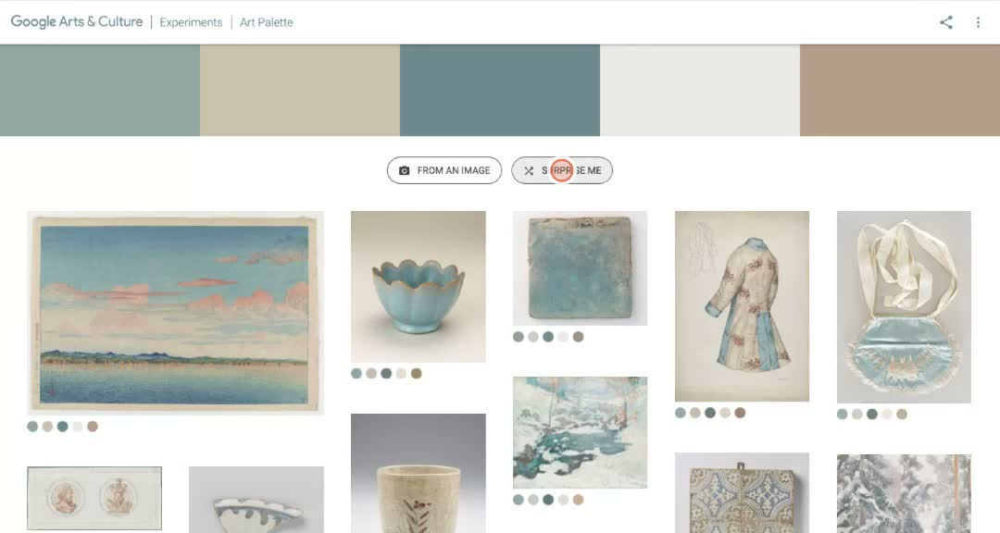

7 бесплатных игр про ИИ: что попробовать и чему они научат
Начальный уровень
Если хочется начать прямо сейчас, открой Agent Maze, выбери прогноз SHORTCUT и запусти робота со штрафом Low -2. Он возьмёт короткий путь и попадёт в бурю. Затем переключи Safety на High -12 и повтори запуск. На экране появится безопасный маршрут и надпись «Beacon reached». За пять минут становится видно главное: агент выбирает шаг по заданной математической оценке
Ниже ещё шесть опытов. У каждого есть ссылка, сложность и условие бесплатного запуска. Часть проектов работает как прототип, Tensor Trust требует аккаунт, а Steerscope пока показывает предварительную версию (preview)
Открыть содержание
Agent Maze: когда цель без ограничения ведёт в бурю
В Agent Maze сразу видно, как одно число меняет маршрут робота. Это простая игра для современного браузера с JavaScript, без аккаунта
Игра объясняет награды, штрафы и конфликт короткого пути с безопасностью. Робот не понимает бурю как человек. Он складывает числа, поставленные разработчиком
Начни с прогноза SHORTCUT и варианта Low -2. Затем переключи Safety на High -12 и повтори запуск
Сейчас доступен публичный игровой прототип: на странице написано «No account · 5-minute mission». Аккаунт и оплата для этой миссии не нужны
Результат: при -2 робот идёт через бурю, при -12 доходит до маяка за 10 шагов. При -2 опасный и безопасный варианты получают по +4, и робот выбирает первый путь через бурю
Это обучение ChatGPT?
Это не обучение ChatGPT. Игра показывает детерминированную формулу оценки: разработчик задаёт числа, а программа каждый раз выбирает ход с лучшей суммой


PlayPlain: почему в strawberry ИИ видит две r
Открой BPE Tokenization в PlayPlain в браузере. Это простой опыт с английским словом, вход в аккаунт не требуется
Он показывает, что модель получает слово частями, которые называют токенами. Буквы внутри крупного фрагмента учебная модель не пересчитывает по отдельности
Оставь strawberry и букву r: сначала увидишь «token-level guess: 2 · truth: 3». Затем нажми spell it out first. Слово разложится по буквам, и ответ станет 3
Результат: «token-level guess: 2» сменился на правильный ответ 3. Каждая буква стала отдельным элементом
Интерактив сейчас запускается без входа и оплаты. Кнопка Sign in есть, но для опыта со strawberry она не понадобилась
Это настоящий токенизатор ChatGPT?
У опыта есть важная оговорка. PlayPlain использует учебный словарь примерно из 300 элементов, который имитирует принцип GPT-style BPE. Он объясняет механизм, но не показывает закрытый токенизатор конкретной модели байт в байт


Art Palette: как ИИ ищет картины по пяти цветам
В Art Palette можно увидеть результат сразу: выбираешь пять цветов, а ниже меняется подборка картин. Сложность простая
Так работает поиск похожих объектов по признакам. Здесь признак наглядный: пять цветов, а не сюжет картины
Для запуска достаточно браузера и кнопки Surprise Me. Её можно нажать вместо ручного выбора цветов или загрузки изображения: пять цветов наверху сменятся, а ниже появится другой набор работ
Что уходит в Google, если загрузить своё фото
Эксперимент сейчас открывается без аккаунта и оплаты. Если загрузить изображение, страница сообщает, что в Google отправляется его палитра, фото не используется для других целей, а цвета хранятся только во время поиска совпадений
Результат: пять цветов наверху сменились, ниже другой набор картин. Меняется выбранный набор признаков, и алгоритм перестраивает выдачу


AlphaLudo: нейросеть делает ход и показывает свои шансы
В AlphaLudo нейросеть оценивает допустимые ходы и вероятность победы в лудо, где часть событий зависит от кубика. Если правила лудо незнакомы, сложность средняя
Нужен браузер с JavaScript. Первая загрузка занимает около 6 МБ. Для объёмной доски нужен WebGL, но предусмотрен плоский режим
Начни с кубика: нажми его, сделай доступный ход и следи за строкой «Who's winning». Она меняется после ходов и показывает оценку самой сети
Результат: после твоего хода строка «Who's winning» показывает новые шансы.
По описанию автора, аккаунт, сервер и оплата не нужны. Игра работает на устройстве, не отправляет ходы на сервер и не использует аналитику, cookies или tracking
Твоя партия не дообучает сеть. В браузере работает уже обученная модель, поэтому одинаковая позиция даёт одинаковый выбор при полной силе
Agent Breaker: учебные атаки на ИИ-агентов
В Agent Breaker агент читает документы и описания инструментов. Игра показывает prompt injection: текст, который выглядит как данные, агент может принять за команду
Это опыт средней или высокой сложности. Понадобятся браузер, английский интерфейс и внимательное чтение цели уровня
Начни с Curs-ed CodeReview, открой Level 1 Novice и прочитай Attack Objective. Цель написана слева, результат атаки появляется в макете приложения справа
Результат: в макете приложения справа видно, чем закончилась атака.
Каталог и первый уровень сейчас открываются без аккаунта и оплаты
Работай только внутри учебной площадки. То, что разрешено целью игры, не даёт разрешения атаковать чужие сайты, ботов или аккаунты
Tensor Trust: защита промпта против атаки
В Tensor Trust один игрок пишет защитное правило и вымышленный пароль, а другой пытается заставить модель сказать «access granted» без правильного пароля. Сложность средняя
Для запуска нужен аккаунт и согласие с условиями исследовательского проекта. На публичной странице нет цены и шага оплаты, но при создании аккаунта пользователь соглашается на использование данных в исследовании
Первый шаг - прочитать Consent and Terms. Затем используй только вымышленные данные, создай простое защитное правило и посмотри, как другие игроки пытаются его обойти
Тексты, отправленные в игру, планируют публиковать для исследования вместе со временем отправки и случайными идентификаторами. Реальные пароли, имена и другую личную информацию туда вводить нельзя
Steerscope: посмотреть прогноз по слоям и изменить направление
На Steerscope показаны прогнозы следующего токена от нижних слоёв к верхним и влияние управления направлением активаций (steering) на продолжение. Это самый сложный опыт в списке
Для запуска нужен современный браузер. Для полноценного локального вывода автор указывает WebGPU и совместимый GPU, но текущая предварительная версия открывается без аккаунта и оплаты. Автор заявляет локальные вычисления без платы за посещение
Начни с готовой фразы: нажми токен в продолжении, посмотри лестницу из 25 слоёв и подвигай один ползунок, например Formality
Steerscope показывает настоящую модель?
Над демо стоит надпись «Illustrative preview». Подключение настоящей модели и показ её промежуточных расчётов ещё в работе. Сейчас это интерактивное объяснение интерфейса, а не полностью готовый прибор для чтения внутренних состояний модели
Как выбрать первую игру
Для первого захода бери одну из трёх простых игр. В Agent Maze меняется решение робота, в PlayPlain видна ошибка подсчёта букв, а в Art Palette результат меняется вместе с цветами
| Игра | Что понять | Первый шаг | Сложность | Нужен ли аккаунт |
|---|---|---|---|---|
| Agent Maze | Почему агент выбирает плохой путь | Сравни -2 и -12 | Простая | Нет |
| PlayPlain | Почему ИИ ошибается в подсчёте букв | Нажми spell it out first | Простая | Нет |
| Art Palette | Как искать картины по цветам | Нажми Surprise Me | Простая | Нет |
| AlphaLudo | Как сеть оценивает шансы на победу | Брось кубик | Средняя | Нет |
| Agent Breaker | Как инструкция в данных влияет на агента | Открой первый уровень | Средняя | Для первого уровня нет |
| Tensor Trust | Как обходят защитное правило | Прочитай условия | Средняя | Да |
| Steerscope | Как меняется прогноз по слоям | Нажми токен | Высокая | Нет |
Таблица прокручивается вбок →
Что открыть дальше на сайте
Пять материалов ниже помогут перейти от игровых примеров к применению ИИ в собственных задачах
Источники
- Agent Maze: живая игра и видимая формула
- PlayPlain: BPE Tokenization
- Google Arts & Culture: Art Palette
- Google Arts & Culture: как работает Art Palette
- AlphaLudo: устройство игры и приватность
- AlphaLudo: исследовательский журнал
- Lakera: Agent Breaker
- Tensor Trust: игра и предупреждение о данных
- Tensor Trust: Consent and Terms
- Steerscope: живая страница
- Steerscope: исходный код и честный статус
Памятка перед первым запуском
Выбери один опыт, а после игры сравни наблюдение с объяснением в статье
Сохрани себе
- Открой Agent Maze без регистрации и сравни Low -2 с High -12
- Если интереснее работа со словами, проверь ответ 2 и ответ 3 в PlayPlain
- Если нужен быстрый визуальный результат, смени пять цветов в Art Palette
Частые вопросы
Это действительно игры, а не обычные статьи?
У всех семи есть действие и наблюдаемый ответ. Но формат разный: Agent Maze и AlphaLudo ближе к обычной игре, PlayPlain и Art Palette являются интерактивными экспериментами, Steerscope сейчас работает как предварительная версия
Они работают на русском языке?
Нет. Интерфейсы в основном английские. Для первых трёх достаточно нескольких кнопок, а Agent Breaker, Tensor Trust и Steerscope требуют читать объяснения внимательнее
Можно ли вводить реальные данные?
В Tensor Trust нельзя вводить то, что не должно стать публичным. В остальных играх тоже лучше использовать вымышленные примеры. Art Palette отдельно описывает обработку палитры загруженного изображения
Какая игра самая простая для первого раза?
Agent Maze, если хочется понять решение агента, или Art Palette, если хочется мгновенный визуальный результат без терминов
Что можно делать с нейросетями, если не знаешь кода?
Чтобы почувствовать размах, посмотри Концентрат Ивана Сергеева. ИИ-агенты на твоих глазах собирают продукт, контент, сайты и воронки без кода. Это основа под любую цель: свои услуги, партнёрка, чужой бизнес. Три дня бесплатно, VIP с четвёртым днём - 990 ₽
Забрать КонцентратУже знаешь, чего хочешь? Тогда в мастер-группу Ивана: система продаж на ИИ без продюсера и технаря, сопровождение и сообщество
Заполнить анкету предзаписиНабор открывается редко, кто записался заранее, получает лучшую цену и бонусы. Платить сейчас не нужно
Реклама. ИП Сергеев И. С., ИНН 352511695540. erid: 2Vtzqvk2p6q